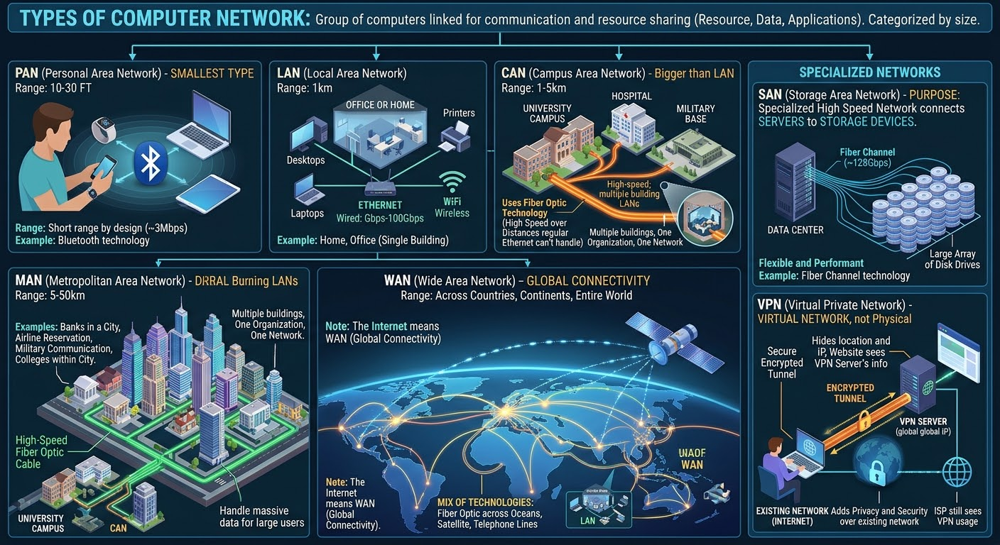

Types of Computer Network..
A computer network is a group of computers linked to each other that enables the computer to communicate
with another computer and share their resources, data, and applications. A computer network can be categorized
by its size. A computer network is mainly of four types
LAN(Local Area Network), PAN(Personal Area Network), MAN(Metropolitan Area Network), WAN(Wide Area Network)
But we will see including other types as much as possible.
PAN(Personal Area Network).
PAN is the smallest network type. it connects personal devices 10 to 30 feet.
The most common PAN technology is Bluetooth. it is a short range by design. you cannot connect across a building but you can connect to the device around you.
the speed is ~3Mbps
LAN(Local Area Network).
We can call our home network, office network LAN.
It connects devices within a single building or small area (1km). LAN uses two main technologies: wired connections using Ethernet and wireless connections using WiFi.
Ethernet LANs run anywhere from 1Gbps - 100Gbps so speed is a big advantage here.
CAN(Campus Area Network).
It is bigger than LAN . CAN uses fiber optic technology because of its high speed over longer distances regular Ethernet can't handle.
CAN connects multiple buildings within limited area(1 - 5km). example: University campuses, hospitals, military bases...multiple buildings, one organization, one network.
Each building has its own LAN, so CAN connects all LANs together using high speed fiber optic cable.
MAN(Metropolitan Area Network).
This network covers an entire city or metropolitan area (5 - 50km). it connects multiple LANs across a city.
MAN is used in communication between the banks in a city, Airline Reservation, communication in the military, college within a city . . .
MAN uses high-speed fiber optic cable, they are designed to handle massive amount of data because they are serving large number of users.
WAN(wide Area Network).
WAN connects networks across countries or continents the entire world. It connects millions of smaller networks LANs and MANs across the entire world.
WAN uses a mix of technologies: Fiber optic cables running across ocean floors, Satellite connections, telephone lines..
Note: when you say the network, it means almost LAN. when you say the Internet, it means WAN(the global connectivity).
SAN(Storage Area Network).
This one is not about the geographic size it covers, but the purpose!. It is specialized high speed network connects servers to storage devices.
Data centers and Enterprises mostly use SAN. Fiber Channel is the most common technology SAN use running speeds from 2GB up to 128Gbps.
The key advantage is flexibility and performance.
VPN(Virtual Private Network).
What makes this one completely different from other types of computer network is, it is not a physical network, it is virtual network.
It creates a secure encrypted tunnel over an existing network (Internet). when we connect to VPN server all our internet traffic gets encrypted and routed through the server.
when we visit website, the website see the VPN server's location and IP address not ours.
Note that, ISP can see that we are using VPN. and if you are connected to VPN server doesn't mean it replaces other types of network. you are still on LAN or WAN and the VPN adds privacy and security. (it layers on top.)
See Figure 01

Figure-01